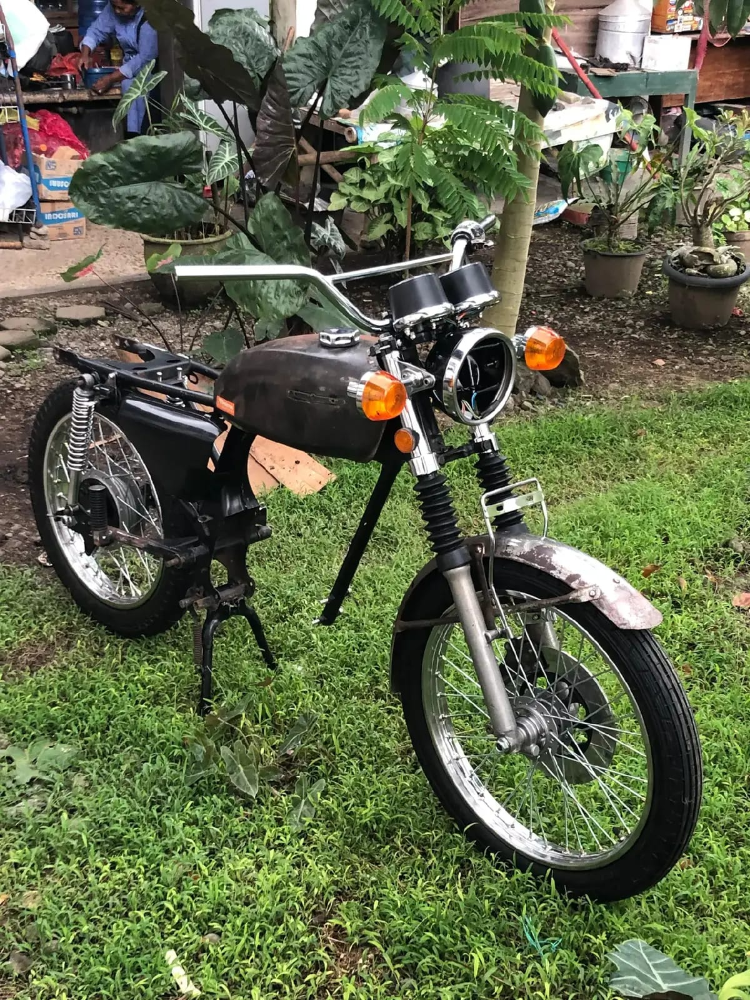

Foto asli dari bengkel, sesuai urutan kerja.

Tahap 1 — Perbaikan Rangka
Jenis pekerjaan: Perbaikan rangka dan pengecatan dasar.
Rangka yang berkarat dibersihkan, dilas bila perlu, lalu dicat ulang agar kuat dan rapi.

Tahap 2 — Perbaikan Mesin
Jenis pekerjaan: Bongkar, periksa, dan rakit ulang mesin.
Bagian dalam mesin diperiksa satu per satu agar motor dapat menyala dan berjalan normal.

Tahap 3 — Body dan Perakitan
Jenis pekerjaan: Pemasangan tangki, jok, dan body.
Body dipasang kembali ke rangka dan disetel agar dudukannya pas dan kokoh.

Tahap 4 — Penyelesaian
Jenis pekerjaan: Perakitan akhir dan pengecekan jalan.
Motor dirakit lengkap lalu dicek kelistrikan, rem, dan mesin sebelum diserahkan ke pemilik.